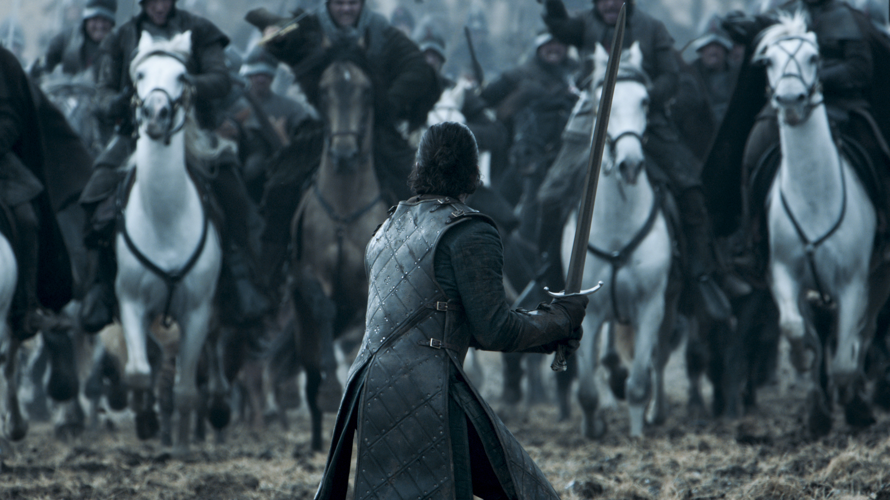
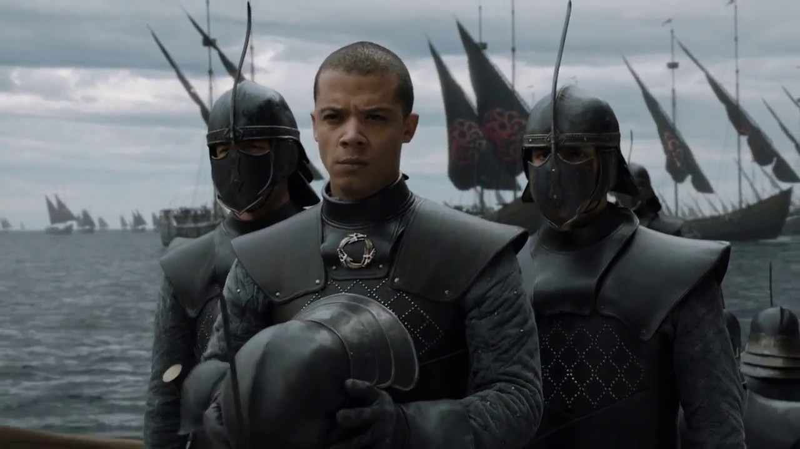
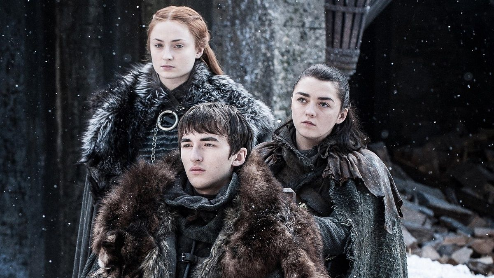

Series Televisivas
Games Of Thrones
Game of Thrones (llamada Juego de tronos en España) es una serie de televisión de drama y fantasía medieval creada por David Benioff y D. B. Weiss y producida por la cadena HBO. Su argumento está inspirado en la serie de novelas Canción de hielo y fuego, escrita por el estadounidense George R. R. Martin, y relata las vivencias de un grupo de personajes de distintas casas nobiliarias en el continente ficticio Poniente para tener el control del Trono de Hierro y gobernar los siete reinos que conforman al territorio

La trama de Game of Thrones está basada en la serie de novelas Canción de hielo y fuego,3132 y relata las vivencias de un grupo de personajes de distintas casas nobiliarias en el continente ficticio Poniente para tener el control del Trono de Hierro y gobernar los siete reinos que conforman al territorio. La primera temporada comienza quince años después de la guerra civil conocida como la «rebelión de Robert», con la cual Robert Baratheon expulsó del Trono de Hierro a los Targaryen y se proclamó gobernante de Poniente. Tras la repentina muerte de la Mano del Rey, Jon Arryn, Robert invita a su amigo Eddard «Ned» Stark —Lord de Invernalia— a asumir el oficio vacante. Este último acepta y, tan pronto llega a Desembarco del Rey —la capital de Poniente y sede del Trono de Hierro—, va descubriendo la verdad detrás de una serie de intrigas y conspiraciones que involucran a otras familias nobiliarias y que están relacionadas con la tragedia de Arryn.

Los siete reinos que conforman el territorio continental de Poniente son el Norte regido por la casa Stark; el de la Montaña y el Valle por los Arryn; el de las Islas y los Ríos, por los Greyjoy; el de la Roca, por los Lannister; el reino del Dominio por la casa Tyrell; las Tormentas, por los Baratheon; y Dorne, por los Martell. Sus capitales son Invernalia, Nido de Águilas, Harrenhal, Roca Casterly, Altojardín, Bastión de Tormentas y Lanza del Sol, respectivamente. Más allá del norte de Poniente limitado por un muro de hielo, existen regiones en las que predominan las bajas temperaturas y que están habitadas por hostiles conocidos como «salvajes». Essos es otro escenario que posee importancia en la trama, y es donde vivió Daenerys tras el exterminio de su familia. La forma de gobierno de Poniente es una monarquía —que en Dorne se manifiesta en forma de un principado— cuya máxima autoridad reside en el Trono de Hierro, ubicado al sur del continente en Desembarco del Rey.
